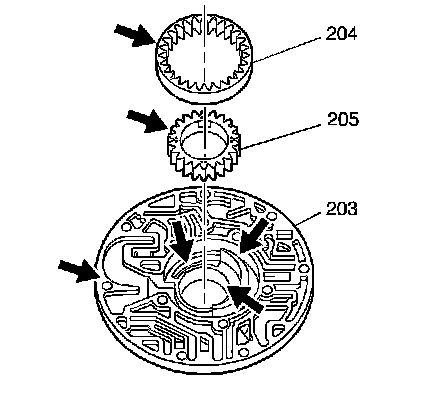
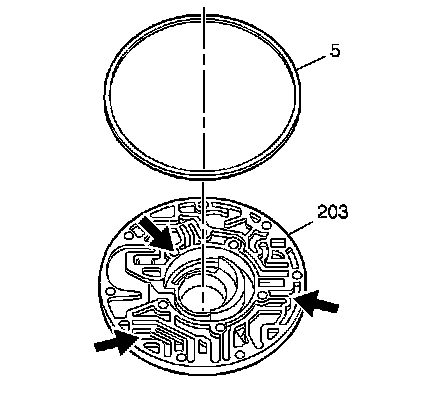

Transmission Oil Pump Body Disassemble
Transmission Oil Pump Body Disassemble

1. Remove the transmission oil pump drive gear (205) and driven gear (204) from the oil pump body (203).
2. Inspect the oil pump body assembly (203) gear pockets, crescent, pump body face and bushing for scoring nicks and wear.
3. Inspect the oil pump drive gear (205) and driven gear (204) for wear.

4. Remove the transmission oil pump seal (5) from the oil pump body assembly (203).
5. Inspect the oil pump body assembly (203) fluid passages for debris.
6. Inspect the oil pump body assembly fluid passages for scored or irregular mating surfaces.
7. Inspect the oil pump body assembly fluid passages for cross channel leaks.
8. Inspect the oil pump body assembly bolt threads for damage.